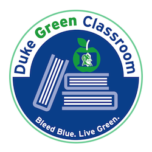

Course Overview
Statistical models are necessary for analyzing the multivariate (often large) datasets that are usually encountered in data science and statistical science. This graduate level course, a core part of Duke's Master in Interdisciplinary Data Science (MIDS) program, aims to provide students with the statistical data analysis tools needed to succeed as data scientists.
In this course, you will learn the general work flow for building statistical models and using them to answer inferential questions. You will learn several parametric modeling techniques such as linear regression, generalized linear models, models for multilevel data and basic time series models. You will also learn to handle messy data, including data with missing values, assess model fit, and validate model assumptions and more generally, check whether proposed statistical models are appropriate for any given data. You will also learn a bit of causal inference under the potential outcomes framework and should time permit, a bit of nonparametric models such as classification and regression trees.
Although this course emphasizes data analysis over rigorous mathematical theory, students who wish to explore the mathematical theory in more detail than what is covered in class are welcome to engage with and request further reading materials from the instructor outside of class.
Finally, this course is designed primarily for students in the MIDS program. Enrollment for non-MIDSters is subject to numbers and permission will be granted on a case-by-case basis.
Learning Objectives
By the end of this course, students should be able to
- Use the statistical methods and models covered in class to analyze real multivariate data that intersect with various fields.
- Assess the adequacy of statistical models to any given data and make a decision on what to do in cases when certain models are not appropriate for a given dataset.
- Cleanup and analyze messy datasets using approaches covered in class.
- Hone collaborative and presentations skills through the process of consistent team work on and class presentations of team projects.
Course Info
Meeting Times
Tuesdays and Thursdays (10:15 - 11:30am)
270 Gross Hall.
Course Format
This course is designed to be primarily synchronous. However, there will also be some asynchronous activities. Students will be required to do pre-assigned readings, go through lecture slides, watch some pre-recorded lecture videos, and take the quizzes embedded in the videos, all before each synchronous meeting times. The meeting times are therefore primarily reserved for in-class activities, discussions and Q&A sessions.
Playposit
To gain access to the pre-recorded lecture videos, you will have to create a Playposit account. There are participation quizzes embedded within the videos. These quizzes make up a part of your final grade (see: course policies) so take them seriously. To join the class on Playposit, you first need to create a new account as a student here. Next, you will use the class link, which I will send out via email, to join the class site. While you need not create an account with your Duke email, I strongly suggest you do.
Teaching Team and Office Hours
| Instructor | Dr. Olanrewaju Michael Akande | Wednesdays and Fridays (9am -- 10am) | Zoom Meeting ID: See Sakai | |
| TAs | Jiaman Betty Wu | TBD | TBD | |
| Xinyi (Iris) Pan | TBD | TBD |
Texts
| Data Analysis Using Regression and Multilevel/Hierarchical Models | Gelman A., and Hill, J. | Recommended but not compulsory |
| An Introduction to Statistical Learning with Applications in R | James, G., Witten, D., Hastie, T., and Tibshirani, R. | Recommended but not compulsory (Free pdf available online via the link) |
| Categorical Data Analysis (3rd ed) | Agresti, A. | Optional (pdf versions of individual chapters, via Duke library using the link) |
Lecture notes and slides, links to the videos and other reading resources will be posted on the course website. We will only loosely follow the textbooks.
Materials
You should have access to a laptop and use it (not a tablet/ipad or phone) to connect to every live session. Make sure it is fully charged.
Important Dates
| Monday, August 23 | Fall classes begin |
| Friday, September 3 | Drop/Add ends |
| Monday, September 6 | Labor day. Classes in session |
| Sunday, October 3 | Team project I reports due |
| Sunday, October 24 | Team project II reports due |
| Wednesday, October 27 | Final project proposal due |
| Monday, November 22 | Upload final project presentations |
| Tuesday, November 23 | End of semester |
| Saturday, December 12 | Final project reports due (tentative) |
Green Classroom
 This course has achieved Duke’s Green Classroom Certification. The certification indicates that the faculty member teaching this course has taken significant steps to green the delivery of this course. Your faculty member has completed a checklist indicating their common practices in areas of this course that have an environmental impact, such as paper and energy consumption. Some common practices implemented by faculty to reduce the environmental impact of their course include allowing electronic submission of assignments, providing online readings and turning off lights and electronics in the classroom when they are not in use. The eco-friendly aspects of course delivery may vary by faculty, by course and throughout the semester. Learn more at http://sustainability.duke.edu/action/certifications/classroom/index.php.
Acknowledgement
This web page contains materials such as lecture slides, homework assignments, and datasets developed or adapted by Dr. Jerry Reiter.